DAY 01
基隆港
登船啟航，開始海上渡假
於基隆港登上 172,000 噸級 MSC 榮耀號 Bellissima。完成報到後可先前往 15 樓自助餐廳享用簡餐，晚間展開船上美食與娛樂體驗。
手冊行程表標示所有港口時間均為預估時間，實際仍以郵輪公司與船上公告為準。
於基隆港登上 172,000 噸級 MSC 榮耀號 Bellissima。完成報到後可先前往 15 樓自助餐廳享用簡餐，晚間展開船上美食與娛樂體驗。
那霸是琉球群島最大的城市，也是沖繩政治與經濟中心。手冊提到國際通、首里城等知名景點，可自費參加 MSC 岸上觀光或自行安排交通。
可利用上午時間走訪國際通或新都心購物城。國際通是那霸市中心約 1.6 公里的商業街，新都心則集結 DFS、百貨、電器、藥妝與流行品牌。
早餐後依船上通知辦理離船。手冊提醒離船人潮較多，請依工作人員引導，並留意行李與結帳相關通知。
手冊把這趟航程定位為海上渡假體驗：白天登岸玩沖繩，其他時間把船本身當成度假村。
指定報到地點為基隆港西岸旅客中心碼頭，地址是基隆市仁愛區港西街16-18號。
第二天下午抵達那霸並夜泊，讓旅客能把岸上觀光與市區購物安排得更從容。
手冊提到可自費參加 MSC 岸上觀光，也可自行搭乘計程車或大眾交通工具。
主餐廳、自助餐廳、特色餐廳、劇院、休閒酒吧與娛樂場域構成航程中的主要體驗。
手冊列出 Baby Club、LEGO 兒童俱樂部、Young Club 與 Teen Club，依年齡分區服務。
船上有精品大道、免稅商店、岸上觀光服務台、照片廊、醫務中心與旅客服務櫃台。
手冊中以星號標示者為自費項目；特色餐廳、酒精與部分飲品、SPA、模擬器、醫療等通常需另付費。
主餐廳包含海王餐廳、燈塔餐廳與櫻桃餐廳；市集自助餐廳為 Market Place Buffet。
晚餐分三個梯次，手冊列出 17:00或17:30、19:15或19:45、21:30；實際座位與時間依船卡為準。
自費選項包含墨西哥小館、美式牛排屋、海渡壽司吧、海渡鐵板燒、海中閣餐廳與香檳吧等。
倫敦大劇院、旋轉木馬劇院、XD 互動影院、天際線露天劇院、賭場、方程式賽車與虛擬實境迷宮等設施列於手冊。
船上有游泳池、天際線泳池、亞利桑那水上樂園、喜馬拉雅橋、泰諾健身中心、健步道與多功能運動館。
MSC Aurea Spa、美髮美甲、熱區與免稅精品購物皆列入設施表，部分服務依手冊為自費。
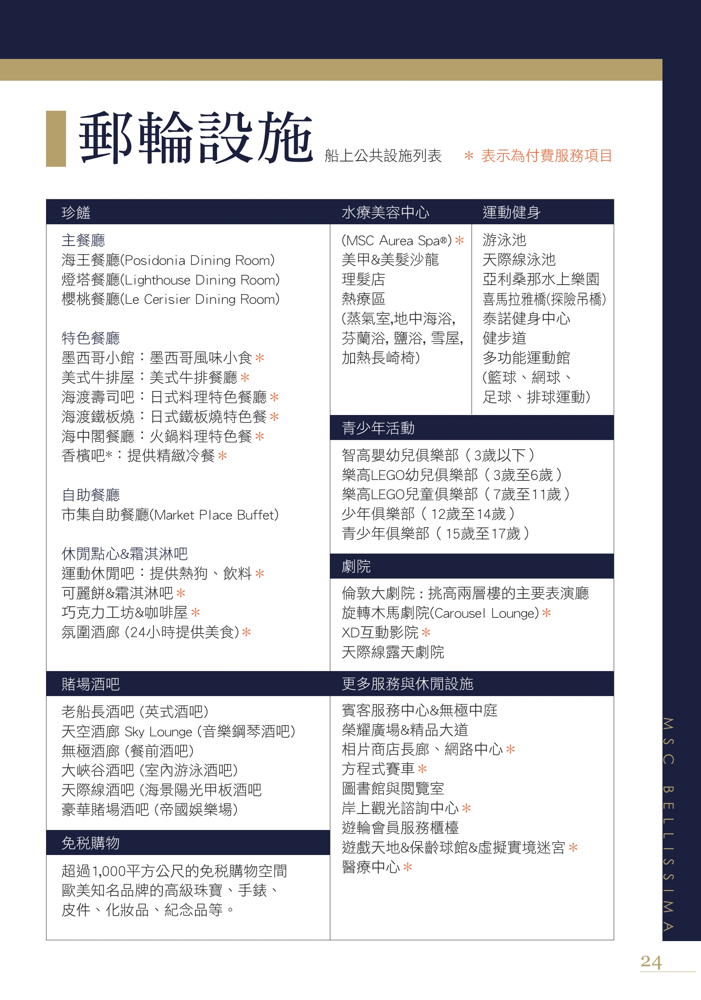
手冊說明船卡有三個功能：航行身分證、消費簽帳卡與房間鑰匙，登船與離船都會檢查。
酒精、碳酸飲料、果汁及部分餐廳或表演場域飲品，手冊提醒需額外付費並加收 18% 服務費。
船上可購買衛星網路；房內直撥國際衛星電話約每分鐘 USD 10，實際仍依船上公告。
這些是手冊明確提醒的準備事項，建議旅客出發前逐項確認。
基隆港西岸旅客中心碼頭，12:30-15:30 報到，16:00 關櫃。手冊提醒依船票指定時間抵達，過早可能需在外等候。
手冊提醒旅遊證件通常須有至少 6 個月效期，並準備護照正本與影本。登船、出入境與返台需使用同一本護照。
役男、現役軍人、退伍軍人與雙重國籍旅客需依規定確認出境文件，手冊也列出役男線上申請出境核准的提醒。
不可攜帶肉類、水果與農產品出入境或登船。手冊列明違規罰鍰可能從新台幣 3,000 元至 3,000,000 元。
手冊提到自 114年10月1日起，外籍旅客入境台灣需填寫電子入國登記表，基隆郵輪旅客須於返台前 3 日內完成。
離船前需觀看艙房電視的離船說明，依指示掛好行李條並將托運行李放在艙房門外，重要文件與藥品務必隨身帶。
以下依手冊「登船須知、碼頭報到、船卡、離船準備須知」整理，保留重要限制、文件與流程細節。
以下為手冊「附錄準備物品」完整清單，保留原分類與項目。出發前可逐項核對。
以下只整理手冊有寫出的費用類型，價格或細節若由船上公告決定，網站不自行推估。
內艙、海景、陽台等房型為每人每晚 USD 18；YC 套房為每人每晚 USD 21；未滿 2 歲嬰兒免收。
自 2019/01/07 起，每位離開日本旅客為 JPY 1,000，手冊說明會由船上帳戶收取等值美元。
特色餐廳、酒水飲品、洗衣熨燙、照片、紀念品、賭場、醫療、美容美髮、SPA、網路與電話等依手冊為自費或可能自費。
我把電子書每一頁都放在這裡。點任一縮圖可開啟高解析原頁，方便核對文字與細節。
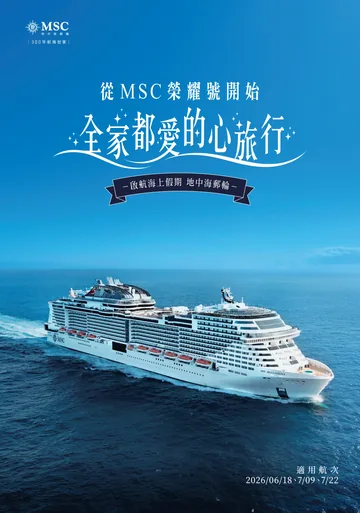
P01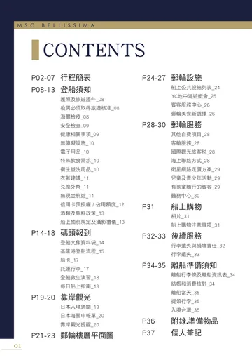
P02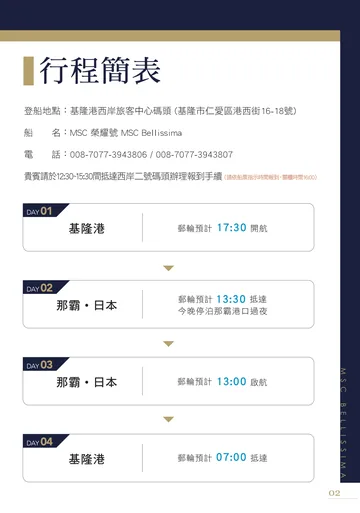
P03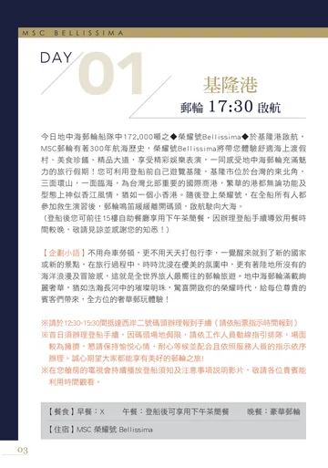
P04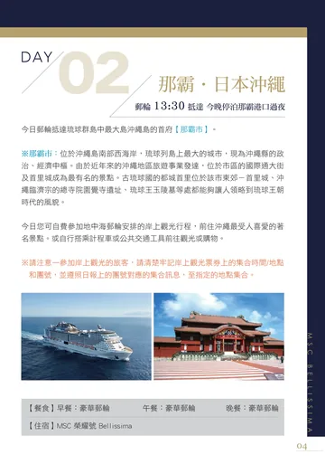
P05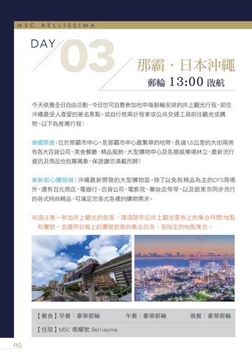
P06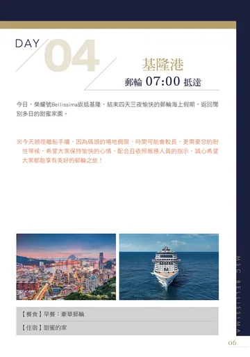
P07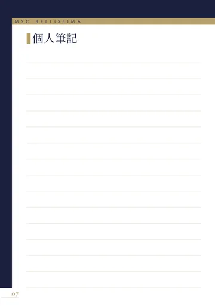
P08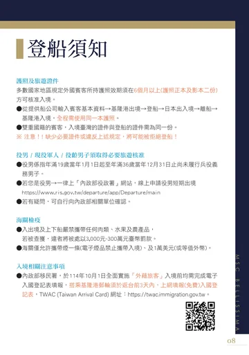
P09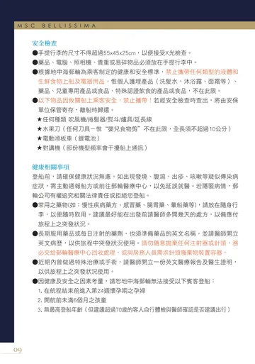
P10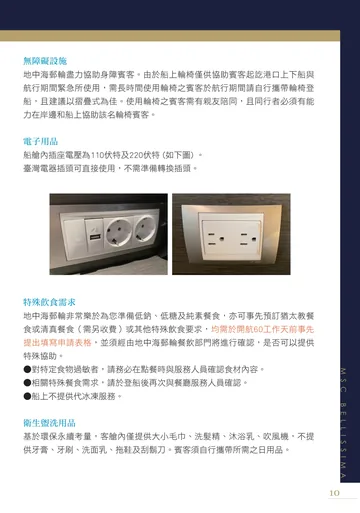
P11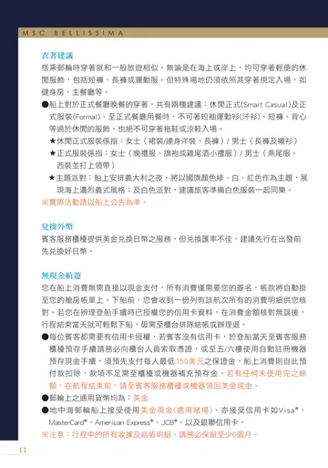
P12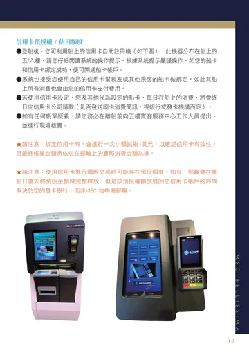
P13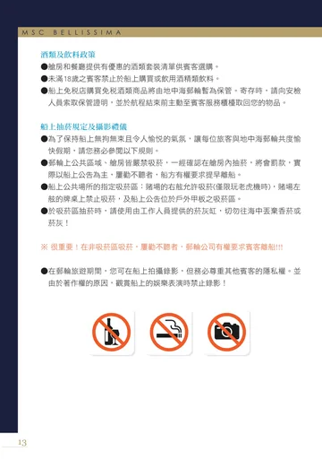
P14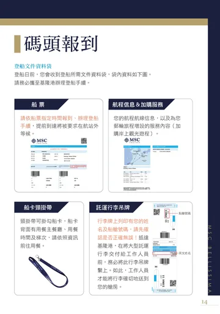
P15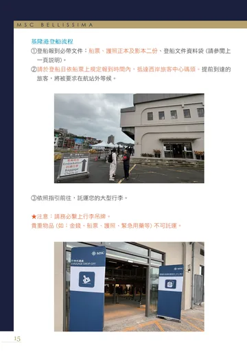
P16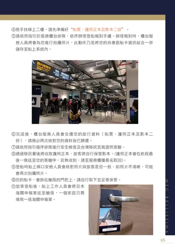
P17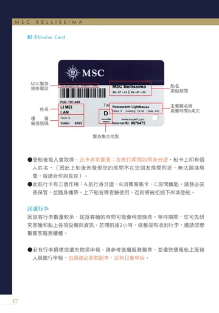
P18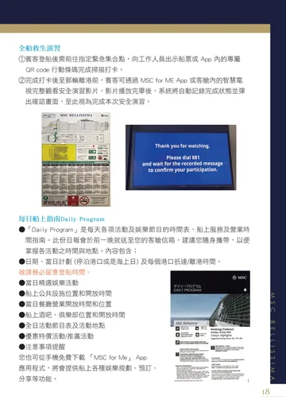
P19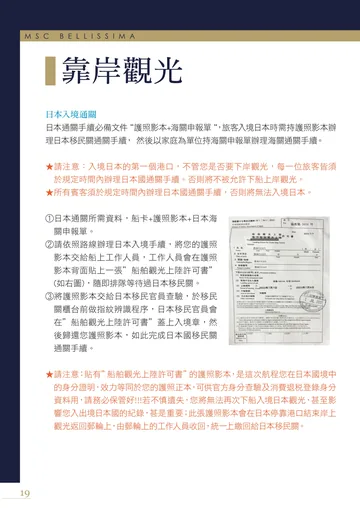
P20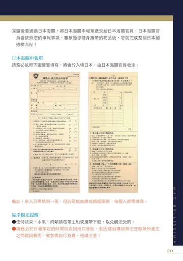
P21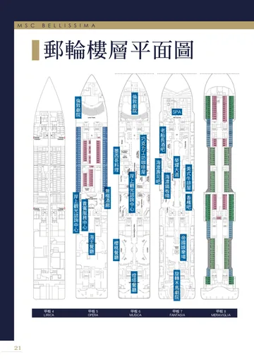
P22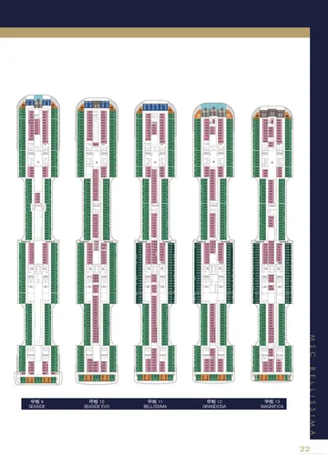
P23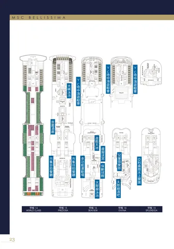
P24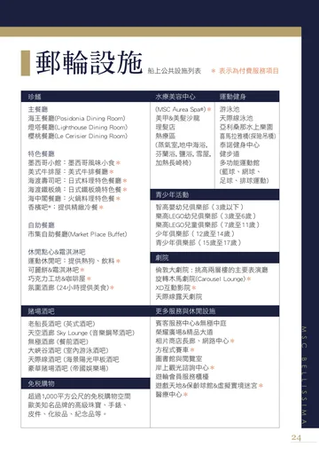
P25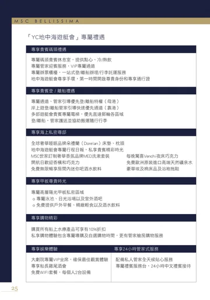
P26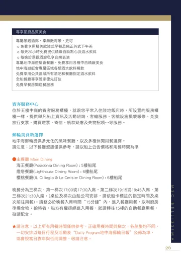
P27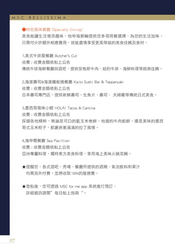
P28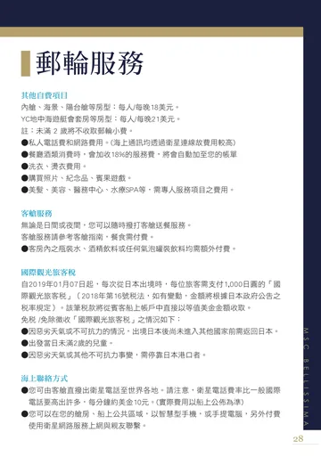
P29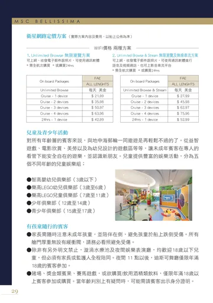
P30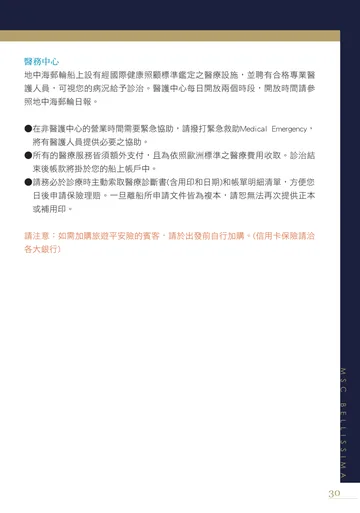
P31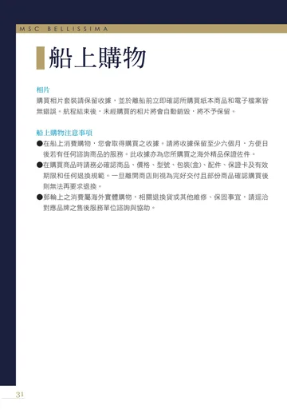
P32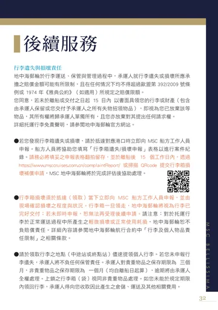
P33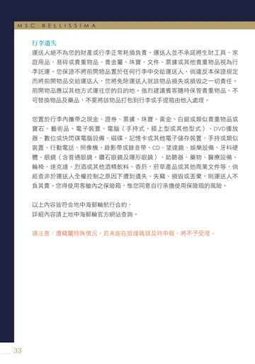
P34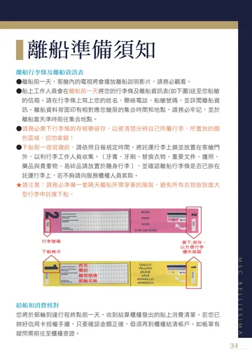
P35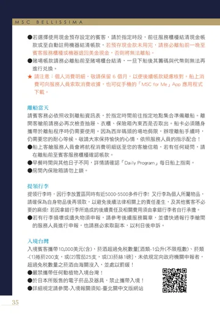
P36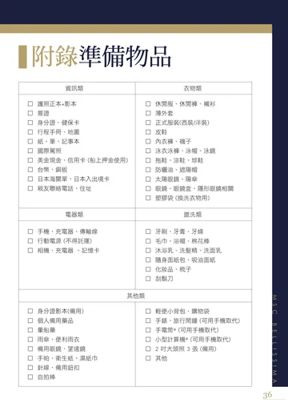
P37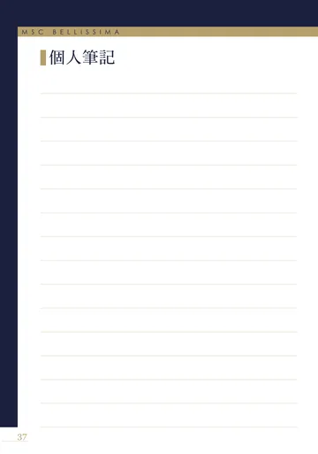
P38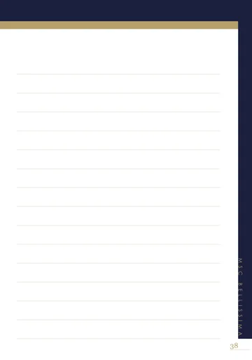
P39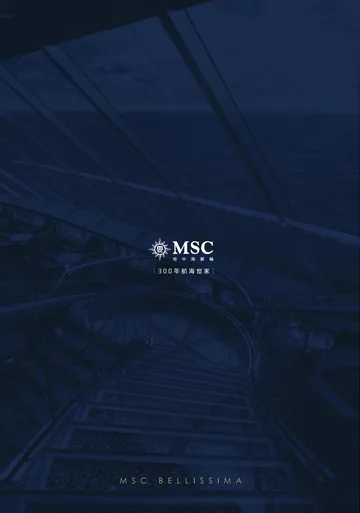
P40只根據 40 頁原說明書回答；手冊沒有寫的內容會直接說不知道。